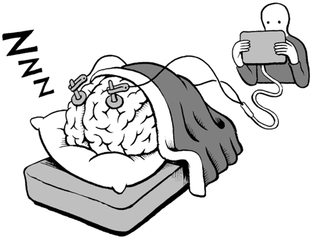

Fyziologie spánku
-
Z vnějšího pohledu je spánek stav charakterizovaný:
-
stereotypní polohou těla,
-
minimálním pohybem,
-
zvýšením prahu pro reakci na smyslové podněty,
-
Typická celková doba spánku za jeden den je u různých druhů
živočichů velmi odlišná.
-
U lidí je to okolo 8 hodin.
-
Spánek u lidí a mnoha dalších savců je načasován především
na dobu, kdy je tma.
